GrindPixel Studio › Jewelverse › Gem Scape
Gem Scape
Cada flecha sale por su propio camino, pero solo si nada se le cruza. Tócalas en el orden correcto y vacía el tablero. Un puzle de flechas en pixel art, del mundo de joyas de Jewelverse.
Pronto en Google Play · GratisVer las diez tierras ↓
Pruébalo aquí: toca una flecha. Si choca, pierdes un corazón.
Cómo se juega
1 · Mira el camino
Cada flecha es una línea fina del color de una gema. Al tocarla, se desliza por su propio camino hasta salir del tablero.
2 · Toca en orden
Si otra flecha se le cruza, choca y pierdes un corazón. Saca primero las que estorban: el orden lo es todo.
3 · Vacía el tablero
Gana con los corazones que te queden: sin perder ninguno, tres estrellas. Encadena flechas sin fallar para encender la Fiebre.
Martillo
Rompe cualquier flecha, esté donde esté.
Reversa
Da vuelta una flecha: saldrá por el otro lado.
Escudo y Brújula
El Escudo te salva del próximo choque; la Brújula marca una flecha que puede salir.
Aventura: diez tierras
Cien niveles a lo largo de un mapa que recorres de tierra en tierra. Cada tierra cambia el juego con su propia regla, y por el camino hay cofres, fuentes de los deseos, tiendas y desafíos.
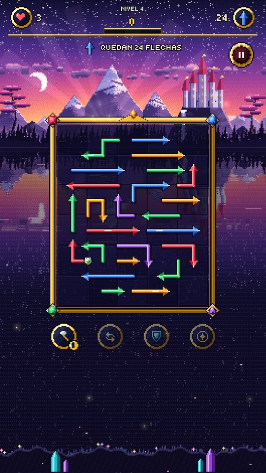
El valle real
ClásicoUna flecha sale si nada la tapa.
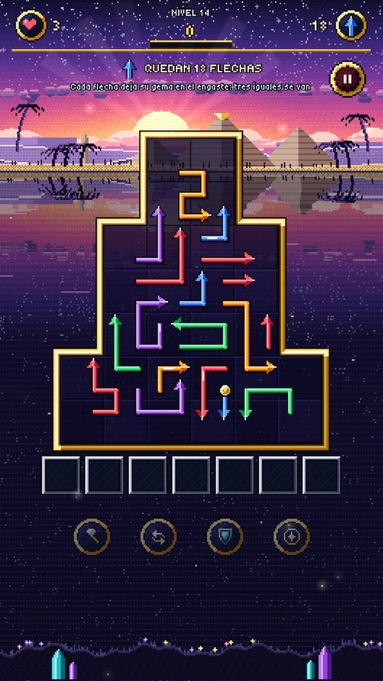
Las dunas de ámbar
EngasteCada flecha deja su gema en el engaste: tres iguales se van.
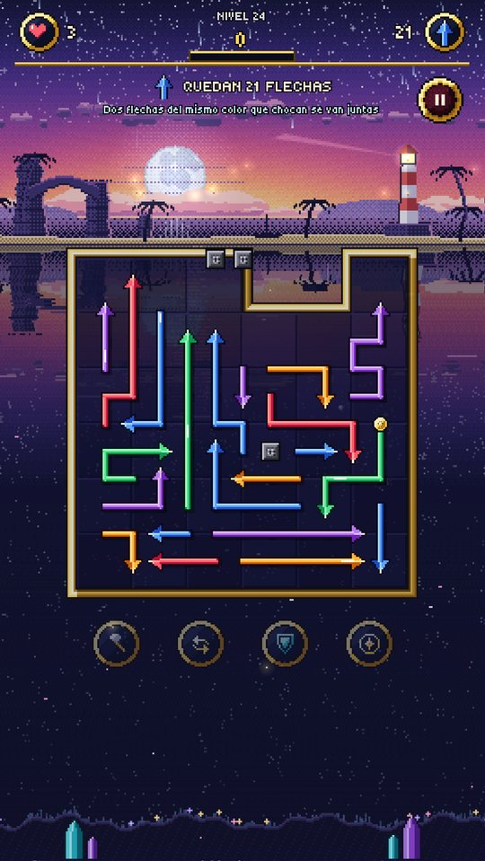
La costa de coral
FusiónDos flechas del mismo color que chocan se van juntas.
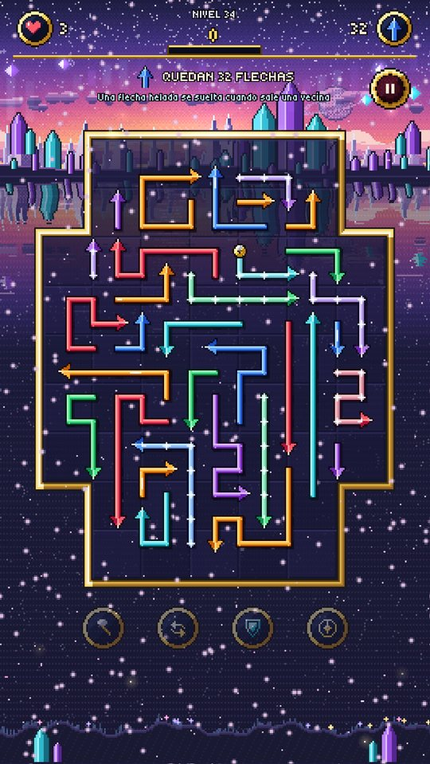
Los picos de hielo
EscarchaUna flecha helada se suelta cuando sale una vecina.
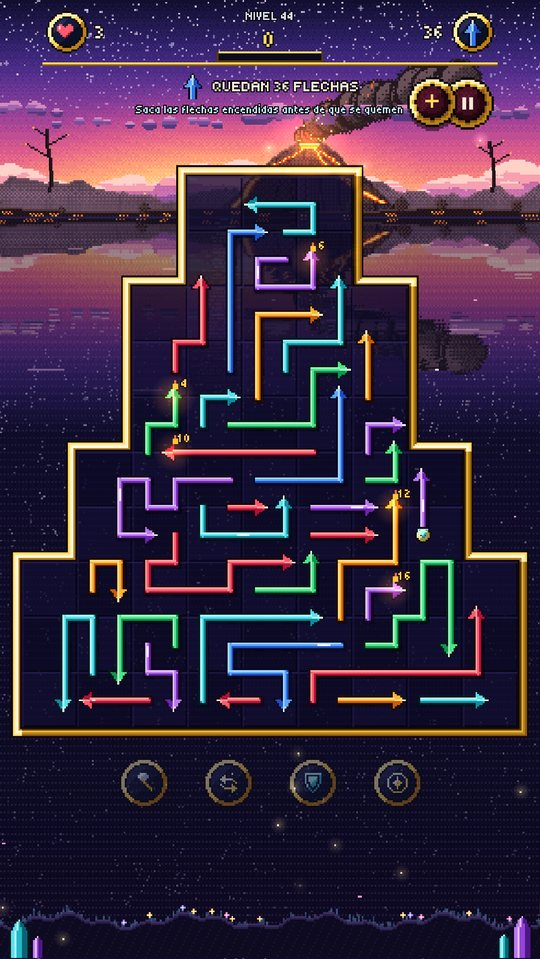
El reino del volcán
BrasasSaca las flechas encendidas antes de que se quemen.
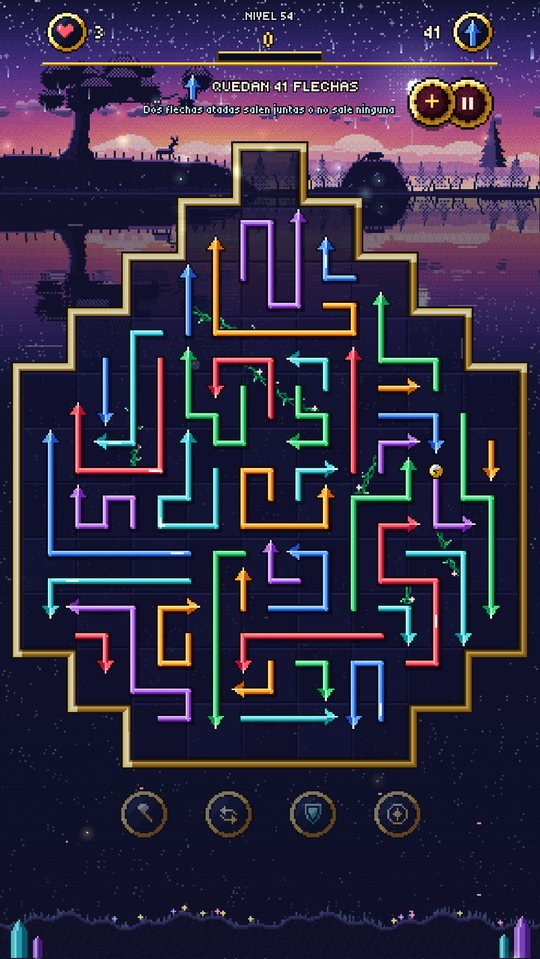
Selva esmeralda
LianasDos flechas atadas salen juntas o no sale ninguna.
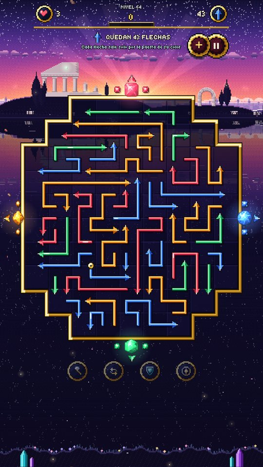
Las ruinas de mármol
PuertasCada flecha sale solo por la puerta de su color.
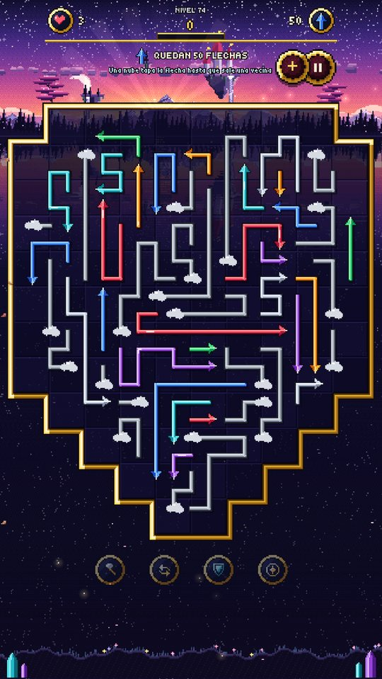
La ciudad celeste
NubesUna nube tapa la flecha hasta que sale una vecina.
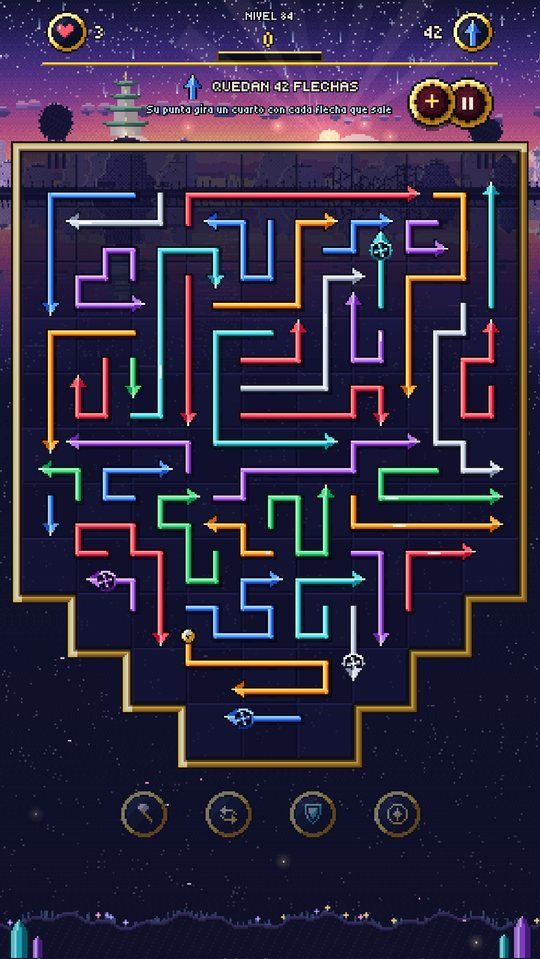
Los picos de jade
MolinillosSu punta gira un cuarto con cada flecha que sale.
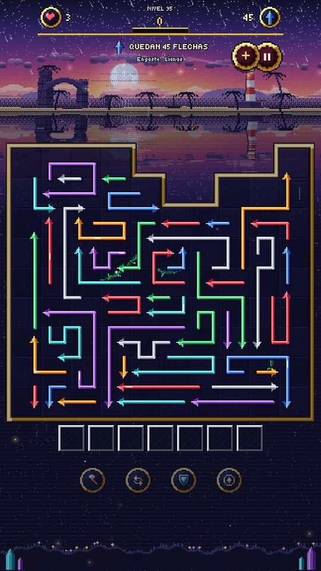
El abismo marino
MezclasDos reglas a la vez. Solo para quien llegó hasta aquí.
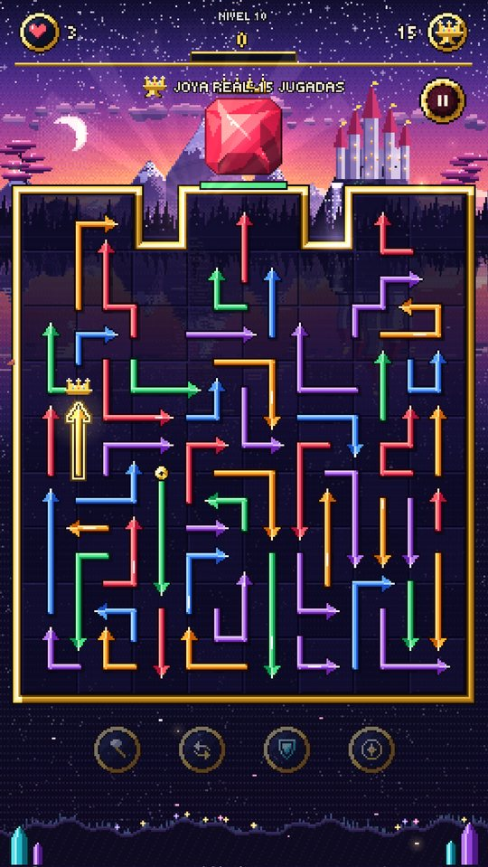
Los guardianes
Cada diez niveles, un guardián custodia la Joya real. Libérala antes de que se acaben las jugadas: saca solo las flechas que la encierran.
- Desde la segunda tierra, cada guardián juega además con la regla de su tierra.
- En el abismo, el último guardián mezcla Engaste y Fusión.
- En Guardianes seguidos los enfrentas uno tras otro, sin descanso.
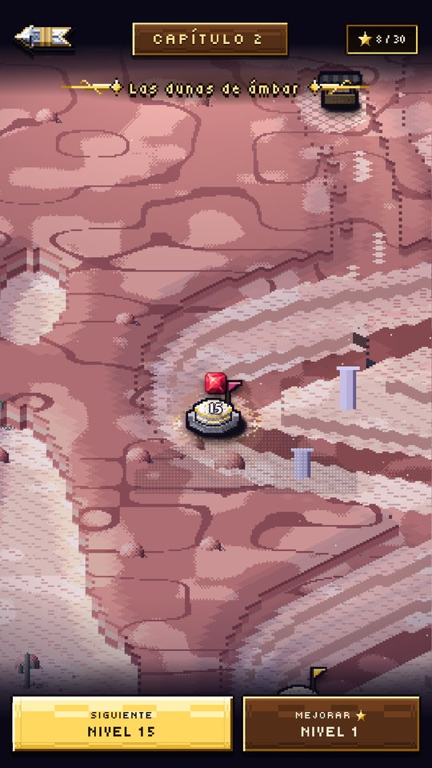
El camino
El mapa es un viaje: cada capítulo es un paisaje nuevo, con su música y su clima.
- Cofres con cargas de poderes.
- Fuentes de los deseos: tu próximo nivel empieza con un corazón más.
- Tiendas y santuarios con bendiciones para el viaje.
- Desafíos: libera la Joya real con una sola jugada de sobra y gana un cofre grande.
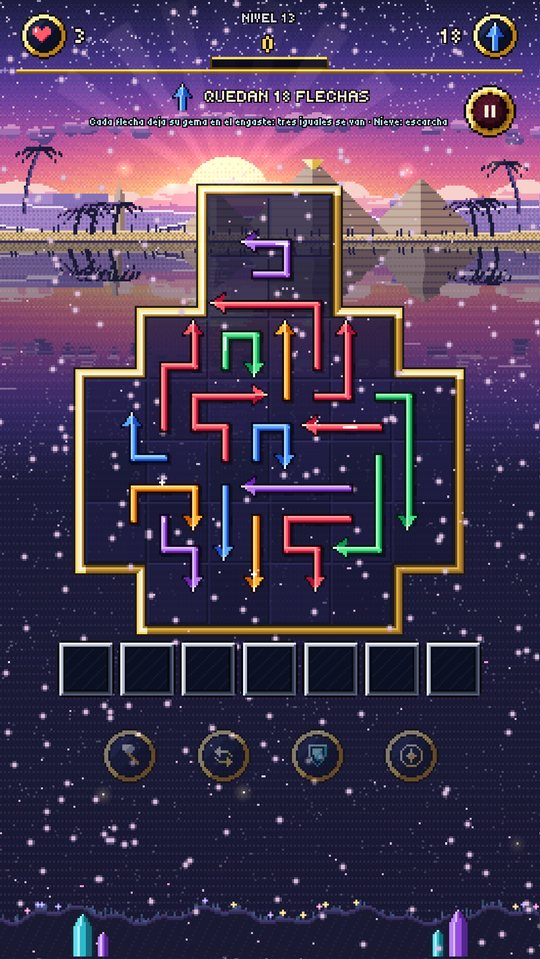
El clima juega contigo
Algunos niveles traen el tiempo de su tierra, y no solo se ve: cambia la partida.
- Brisa: una ráfaga se lleva las flechas libres que apuntan con el viento.
- Nieve y ventisca: los copos congelan flechas por unas jugadas.
- Lluvia: los charcos salpican y liberan a sus vecinas.
- Tormenta: un rayo avisado recorre una columna.
- Terremoto: sacude flechas sueltas y aviva las brasas.
Más modos
Libre
Tableros sin fin que crecen y mezclan reglas a medida que avanzas. Juega a tu ritmo y llega lo más lejos que puedas.
Contrarreloj
El tiempo corre: cada tablero vaciado te devuelve unos segundos. Desde el tercero, cada tablero trae una regla.
Récord
¿Cuántos puntos haces en 30 segundos, 1, 2 o 5 minutos? Cada choque te cuesta tiempo.
Guardianes seguidos
Todos los guardianes, uno detrás de otro. ¿Hasta dónde llegas?
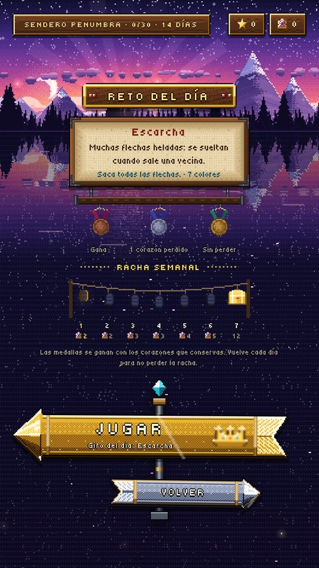
Reto diario
Un tablero nuevo cada día, igual para todos, con su giro: siete colores, escarcha, lianas, brasas o la Joya real.
- Medallas de bronce, plata y oro según los corazones que conservas.
- Una racha semanal de siete farolillos, con un cofre al final de la semana.
- Pensado para los que ya dominan el juego: tableros grandes y dos reglas a la vez.
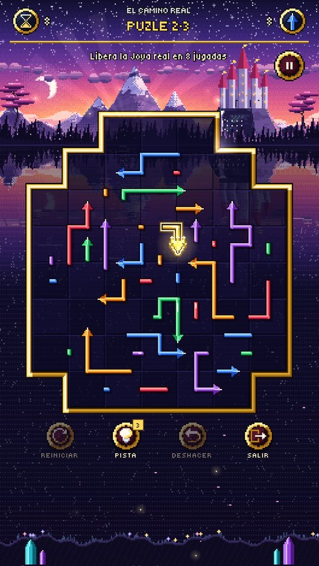
60 puzles
Tableros con una sola solución exacta. Nada de suerte: solo lógica.
- Paquetes de dificultad creciente, desde «Primeros pasos».
- Pistas, deshacer y reiniciar cuando te atasques.
- Cada puzle resuelto suma a tus logros y estadísticas.
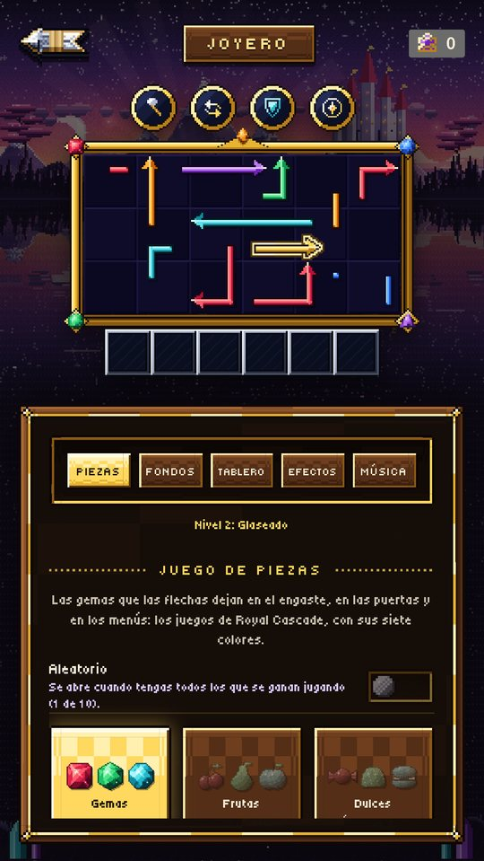
Tu estilo, en el Joyero
Viste el juego a tu gusto. Cada cosmético se gana jugando: se arma pieza a pieza como un rompecabezas con los fragmentos que consigues.
- Diseños de flechas, juegos de gemas y tallas.
- Paisajes, ambientes, diseños y colores de tablero, celdas.
- Marcas doradas, efectos al romper, estilos de música y canciones.
- Pruébalos en una vitrina que juega sola antes de equiparlos.
Temporadas y Sendero
Penumbra, Navidad, Cosecha y Primavera: cada temporada trae su Sendero de 30 paradas con cosméticos de temporada, cofres sorpresa y poderes.
Todo Jewelverse, conectado
Algunos cosméticos solo se ganan en Gem Scape, como la Senda dorada o las Saetas, y luego aparecen en los demás juegos de Jewelverse.
Logros y estadísticas
Logros por tierras visitadas, joyas liberadas, rachas y más, con un álbum de todo lo que has coleccionado.
Tu avance, seguro
Se juega sin conexión. Si quieres, guarda tu avance en la nube con tu cuenta de Google, o cópialo como un código de respaldo.
En 15 idiomas
¿Preguntas o problemas con el juego? Escríbenos a support@grindpixel.studio.